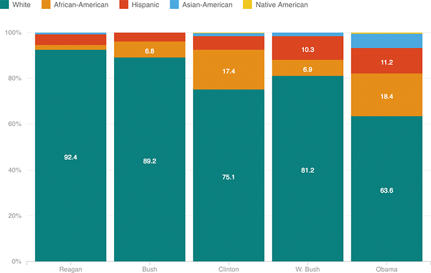

District Court Appointments Have Grown More Diverse
Judgeship appointments have grown far less white than they were in the 1980s. Here’s how the racial and ethnic makeup of those appointments have changed. Presidnet Obama in particular has emphasized his success at putting more women and minorities into judicial positions.
